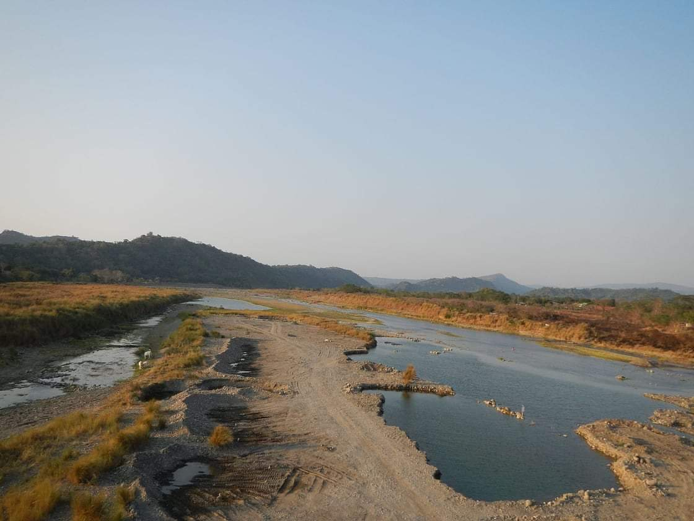
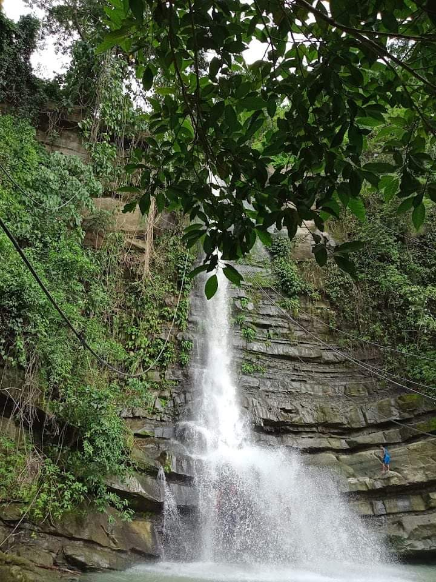
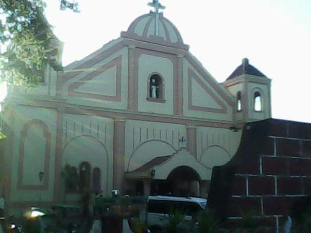
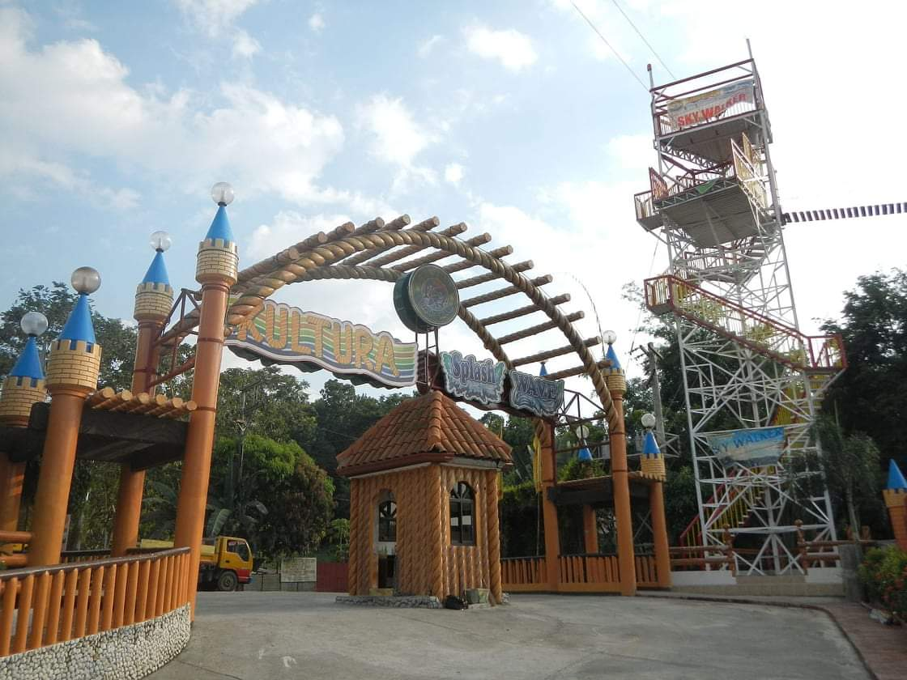
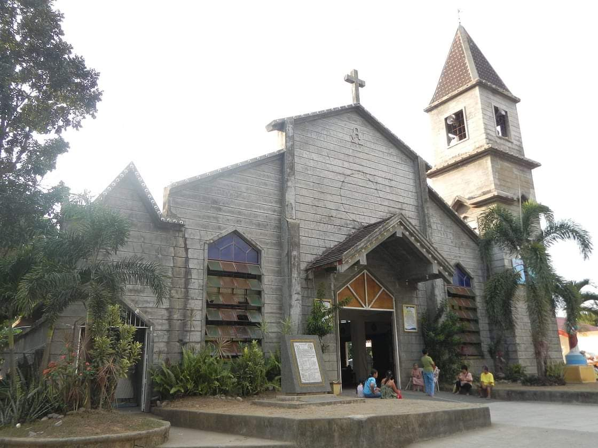

NAGUILIAN TOURIST ATTRACTIONS AND FESTIVAL
NAGUILIAN RIVER
The Naguilian River is located in the western portion of the town. It flows westward beginning from the province of Benguet towards La Union and empties into the South China Sea, draining the valleys of Barangays Bimmotobot, Mamat-ing Sur, Mamat-ing Norte, Tuddingan, Gusing Sur, Gusing Norte, Baraoas Norte, Daramuangan, Dal-lipaoen, Cabaritan Syr, Ortiz, Natividad, Suguidan Norte, and Suguidan Sur.
TUDDINGAN FALLS
One particular waterfall that is pretty easy and accessible is Tuddingan Falls in the Municipality of Naguilian. The sources of Tuddingan Falls are the numerous water springs in the mountains which also supply the vast rice land of Naguilian.
ST. AUGUSTINE OF HIPPO CHURCH
A Catholic church in Balaoan.
PUGO TOURIST ATTRACTIONS AND FESTIVAL
TAPUAKAN RIVER

Tapuakan River, also known as Pugo-Cleanest Inland River of the North, Region 1, is located in Barangay Cares. The natural scenery is also a 1-hour ride from San Fernando City and 4-5 hours drive from Manila.
KULTURA SPLASH WAVE
Pugo's Kultura Splash Wave is a prime resort. It has attractions: Lap pool, Kiddie pool, Dolphin pools, 4 giant slides with Dropzone, Water Factory, Aerial Ziplines. Wall Climbing, and Sky Walker.
HOLY FAMILY FAMILY PARISH CHURCH
The Holy Family Parish was built in the year 1009-1911 by the Belgian Missionary for the people of Pugo, La Union.
PUGAD

Pugad (bird's nest) is one of the recreation and adventure landmarks in Pugo. It is a picturesque site with 3 hectares of green forests, lush mountains, and a clean river. It is 300 meters away from Marcos Highway. Pugo's PUGAD has the longets zip line (380 meters) in Luzon, the second in the Philippines.